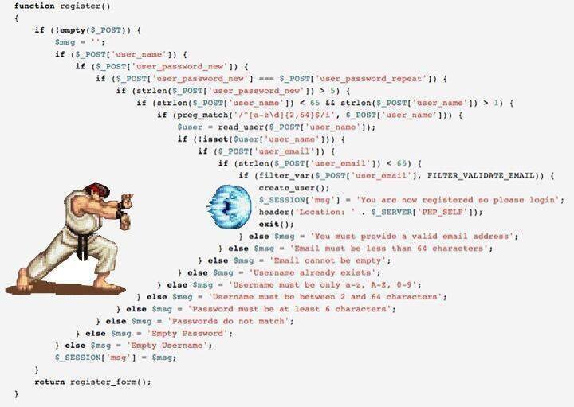

class: middle .center[ ### Scalar blindness ] -- ```haskell map :: (a -> b) -> [a] -> [b] map f (x:xs) = f x : map f xs map _ _ = [] ``` ```elixir @type a :: any @type b :: any @spec map((a -> b), [a]) :: [b] def map(f, [x | xs]), do: [f.(x) | map(f, xs)] def map(_, _), do: [] ``` --- class: middle count: false .center[ ### Scalar blindness ] ```haskell map :: (a -> b) -> [a] -> [b] -- map f (x:xs) = f x : map f xs -- map _ _ = [] ``` ```elixir @type a :: any @type b :: any @spec map((a -> b), [a]) :: [b] # def map(f, [x | xs]), do: [f.(x) | map(f, xs)] # def map(_, _), do: [] ``` --- .center[ ### Boolean blindness ] ```haskell data Bool = False | True filter :: (a -> Bool) -> [a] -> [a] ``` ```elixir @type boolean :: :false | :true @type a :: any @spec filter((a -> boolean), [a]) :: [a] ``` -- <br> .center[ <img src="img/filtering.png" width="70%"> ] <!--- In some cases filtrate is meaningful (making coffee) But in some cases residue is meaningfule (cooking spaghetti) ---> --- .center[ ### Algebraic data types ] ```haskell data Bool = False | True filter :: (a -> Bool) -> [a] -> [a] ``` -- ```haskell data FilterResult = Discard | Keep filter :: (a -> FilterResult) -> [a] -> [a] ``` -- .center[ ] ```haskell makeCoffee mix = filter isLiquid mix cookSpaghetti mix = filter (not . isLiquid) mix ``` -- ```haskell makeCoffee mix = filter (\x -> if isLiquid x then Keep else Discard) mix cookSpaghetti mix = filter (\x -> if isLiquid x then Discard else Keep) mix ``` --- .center[ ### Boolean blindness in UI ] .left-column-big.center[ <img src="img/rentier-0.png" width="50%" border="1"> ] -- .right-column-big.center[ <img src="img/rentier-1.png" width="50%" border="1"> ] -- ```haskell data Bool = False | True -- context is lost outside of data model data TimeKind = WorkingTime | BreakTime ``` <!--- Boolean blindness propagates in programm very easy. Let's say this boolean field of model passed to some function which renders some nice calendar widget with organization schedule. And then its type is just boolean - it loose all its context outside of Organization data model. ---> -- ```haskell data TimeKind = WorkingTime | BreakTime | VacationTime | HolidayTime ``` --- .center[ ### Scalar blindness ] ```haskell validate :: String -> String -> String -> HashAlgorithm -> Bool ``` ```elixir @spec validate(String.t, String.t, String.t, hash_algorithm) :: boolean ``` -- .center[ <img src="img/shrug.png" width="25%"> ] -- ```haskell data Password = Password String data PasswordSalt = PasswordSalt String data PasswordHash = PasswordHash String data ValidationResult = Valid | Invalid validate :: Password -> PasswordSalt -> PasswordHash -> HashAlgorithm -> ValidationResult -- types are meaningful even outside of this function ``` --- .center[ ### Scalar overloading ] *example from [moment.js](https://momentjs.com/docs/#/parsing/string-format/)* ```javascript moment('2012-10-14', 'YYYY-MM-DD', 'fr', true); ``` -- ```haskell moment :: String -> -- scalar blindness String -> -- scalar blindness String -> -- scalar overloading Bool -> -- boolean blindness Moment -- looks good ``` *Smaller* **Locale** *type is expressed with wider overloaded* **String** *type.* *Are arguments* **'FR'** *or* **'fr-fr'** *or* **'fr-FR'** * also valid? Who knows...* -- ```haskell data Date = Date String data DateFormat = DateFormat String data Locale = En | Fr | Ru | Ee data Strictness = Strict | NotStrict moment :: Date -> -- Infinite to Infinite DateFormat -> -- Infinite to Infinite Locale -> -- Infinite to Finite Strictness -> -- Finite to Finite Moment ``` --- class: center, middle *I call it my billion-dollar mistake. It was the invention of the \_\_\_\_ in 1965. I couldn't resist the temptation to put in a \_\_\_\_ , simply because it was so easy to implement. This has led to innumerable errors, vulnerabilities, and system crashes, which have probably caused a billion dollars of pain and damage in the last forty years.* (c) [Sir Tony Hoare](https://en.wikipedia.org/wiki/Tony_Hoare) --- .left-column-big.center[ <img src="img/npe1.jpg" width="54%" border="1"> ] .right-column-big.center[ ] --- .center[ ## Parametric ADT (generics) ] ```haskell data Maybe a = Nothing | Just a foo :: String string2Int :: String -> Maybe Int increment :: Int -> Int ``` -- ```haskell -- compile-time error here! (increment . string2Int) foo ``` -- ```haskell -- compiles ok case string2Int foo of Just x -> increment x Nothing -> doSomethingElse ``` --- .center[ ## Either ] .center[  ] -- ```haskell data Either a b = Left a | Right b ``` -- ```elixir @type either(a, b) :: {:error, a} | {:ok, b} ``` -- ```haskell foo :: String string2Int :: String -> Either ParseError Int increment :: Int -> Int case string2Int foo of Left x -> handleErrorSomehow x Right x -> increment x ``` --- class: center ## Success story of ADTs --- ```haskell -- Define our entities as usual share [mkPersist sqlSettings, mkMigrate "migrateAll"] [persistLowerCase| Person firstName String lastName String age Int deriving Show |] -- We'll create a single route, to access a person. It's a very common -- occurrence to use an Id type in routes. mkYesod "PersistTest" [parseRoutes| / HomeR GET /person/#PersonId PersonR GET |] -- List all people in the database getHomeR :: Handler Html getHomeR = do people <- runDB $ selectList [] [Asc PersonAge] defaultLayout [whamlet| <ul> $forall Entity personid person <- people <li> <a href=@{PersonR personid}>#{personFirstName person} |] -- We'll just return the show value of a person, or a 404 if the Person doesn't -- exist. getPersonR :: PersonId -> Handler String getPersonR personId = do person <- runDB $ get404 personId return $ show person ``` --- .center[ ## ADTs in BEAM languages? ] -- ```elixir false | true nil MyModule :my_function :USD | :EUR | :BTC {:ok, ok} | {:error, error} %MyStruct{foo: "bar"} # %{__struct__: MyStruct, foo: "bar"} ``` -- ```erlang -record(person, {name = "", phone = [], address}). #person{name = "Robert", phone = [0,8,2,3,4,3,1,2], address = undefined} {person, "Robert", [0,8,2,3,4,3,1,2], undefined} ``` -- .center[ <br> **Atom**, **Tuple** and **Map** are the most abused overloaded types ] --- .center[ ## AST for ATD (it's macro time!) ] ```elixir convert(100, :USD, :BTCCC) ``` -- - compiles OK - exception in runtime - refactoring = HELL -- ```elixir defmodule CurrencyCode do defmacro usd, do: :USD defmacro btc, do: :BTC end ``` -- .left-column-big[ ```elixir require CurrencyCode convert( 100, CurrencyCode.usd, CurrencyCode.btccc ) ``` - compile-time error! - [GenEnum](https://github.com/coingaming/gen_enum#genenum) library for enums ] -- .right-column-big.center[ ] --- .center[ ## Parametric ADTs in Elixir ] .left-column-big[ ```elixir defmodule Maybe do defmacro just(x) do quote do {:just, unquote(x)} end end defmacro nothing, do: :nothing end ``` ```elixir defmodule Either do defmacro ok(x) do quote do {:ok, unquote(x)} end end defmacro error(x) do quote do {:error, unquote(x)} end end end ``` ] -- .right-column-big[ ```elixir require Maybe case string2int(foo) do Maybe.just(x) -> increment(x) Maybe.nothing() -> do_something_else end ``` ```elixir require Either case string2int(foo) do Either.ok(x) -> increment(x) Either.error(x) -> handle_error_somehow(x) end ``` ] --- class: center, middle # Thanks [Learn you a Haskell for great good](http://learnyouahaskell.com/) <\- basics [OHaskell](https://www.ohaskell.guide/) <\- basics (rus) [Gentle introduction to Haskell](https://www.haskell.org/tutorial/) <\- official tutorial [Functors, applicatives, and monads in pictures](http://adit.io/posts/2013-04-17-functors,_applicatives,_and_monads_in_pictures.html) <\- fun [Yesod](https://www.yesodweb.com/) <\- the most popular Haskell web framework [A type of programming](https://atypeofprogramming.com/) <\- book (WIP) ### [back to index](index.html)